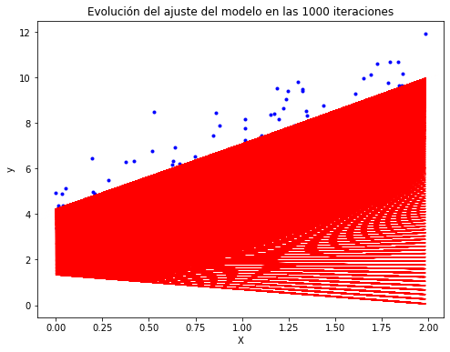

Valoración de opciones por el método de Simulación Monte Carlo¶
Importar datos.¶
datos = read.csv("TRM diaria febrero 2020.csv", sep = ";", dec = ",")
head(datos)
| Fecha | TRM | |
|---|---|---|
| <fct> | <dbl> | |
| 1 | 20/04/2018 | 2724.47 |
| 2 | 23/04/2018 | 2757.96 |
| 3 | 24/04/2018 | 2799.45 |
| 4 | 25/04/2018 | 2785.22 |
| 5 | 26/04/2018 | 2820.29 |
| 6 | 27/04/2018 | 2812.83 |
Vector de precios.¶
precios = datos[,2]
precios = ts(precios)
Rendimientos continuos¶
rendimientos = diff(log(precios))

{kind=link}
\(S_0:\)¶
s = tail(precios,1)
s = as.numeric(s)
s
\(\mu:\) Rendimiento esperado¶
mu = mean(rendimientos) #diario
mu
\(\sigma:\)Volatilidad¶
volatilidad = sd(rendimientos) #diaria
volatilidad
Simulación del precio del activo subyacente (neutral al riesgo)¶
La modelación se realiza con las tasas libres de riesgo \(r\).
\[S_{t+\Delta t}=S_t e^{[(r- \frac{\sigma ^2}{2})\Delta t+\sigma\epsilon \sqrt{\Delta t}]}\]
Cuando el activo subyacente es una divisa se usa \(r - r_f\).
\[S_{t+\Delta t}=S_t e^{[(r - r_{f} - \frac{\sigma ^2}{2})\Delta t+\sigma\epsilon \sqrt{\Delta t}]}\]
Valoración de opciones europeas por Simulación Monte Carlo¶
\[Prima Call = Máx[S_T - K; 0]e^{-rT}\]
\[Prima Call_{divisas} = Máx[S_T - K; 0]e^{-(r - r_f)T}\]
\[Prima Put = Máx[K - S_T; 0]e^{-rT}\]
\[Prima Put_{divisas} = Máx[K - S_T; 0]e^{-(r - r_f)T}\]
Valoración de una opción europea sobre divisas con vencimiento a un mes.¶
# Tasas libres de riesgo
r = 0.018 # E.A. (Colombia)
rf = 0.003 # Nominal (USA)
# Con el modelo Black-Scholes se trabaja con tasas continuas:
r = log(1+r) # C.C.A.
rf = log(1+rf/12)*12 # C.C.A.
T = 30 # 1 mes
k = 3450
dt = 1 # saltos diarios
iteraciones = 10000
set.seed(1) # Valor semilla para la simulación. Con esto siempre se obtendrá el mismo valor.
# Simulación del precio del activo subyacente con un mundo neutral al riesgo
st_prima = matrix(, iteraciones, T+1)
st_prima[,1] = s
for(i in 1:iteraciones){
for(j in 2:(T+1)){
st_prima[i,j] = st_prima[i,j-1]*exp((r/360-rf/360-volatilidad^2/2)*dt+volatilidad*sqrt(dt)*rnorm(1))
}
}
compensacionesCall = vector()
compensacionesPut = vector()
for(i in 1:iteraciones){
compensacionesCall[i] = max(st_prima[i,T+1]-k,0)*exp(-(r-rf)*1/12)
compensacionesPut[i] = max(k-st_prima[i,T+1],0)*exp(-(r-rf)*1/12)
}
primaCall = mean(compensacionesCall)
primaCall
primaPut = mean(compensacionesPut)
primaPut
Prima opción Call europea: \(28,63 COP\).
Prima opción Put europea: \(73,10 COP\).
hist(compensacionesCall, col = "gray", xlab = "Compensación", ylab = "Frecuencia", main = "Compensaciones Call")
{kind=link}

hist(compensacionesPut, col = "gray", xlab = "Compensación", ylab = "Frecuencia", main = "Compensaciones Put")